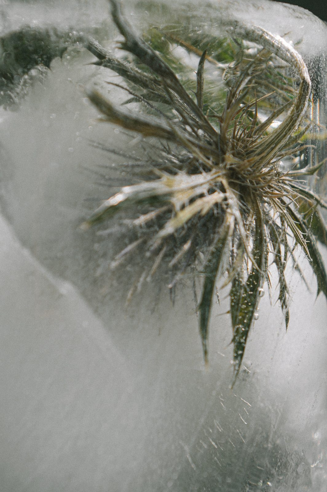
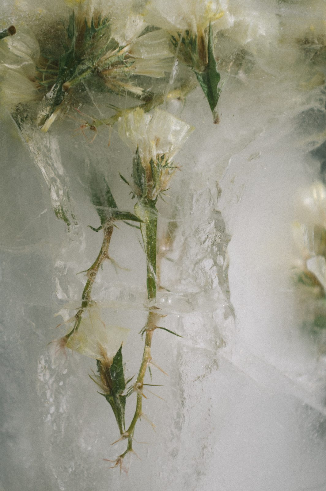
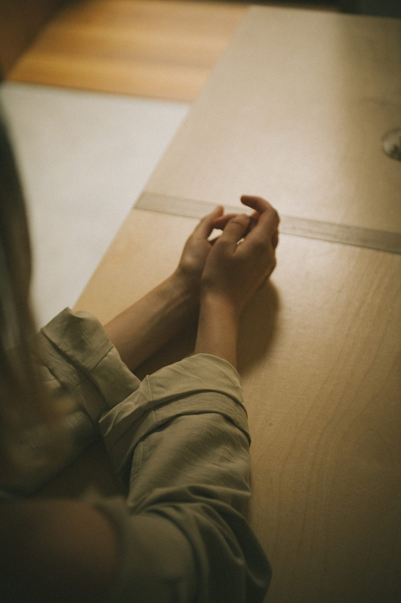
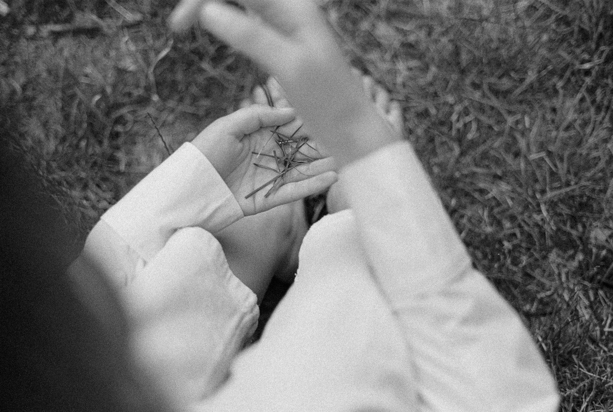

Put a seed in your palm and it will not help you. It has no warmth of its own, and so little weight that you look down to check it is still there. You could carry it in a coat pocket through a whole winter and take it out in March looking exactly as it did in November, and nothing about it would tell you whether you had been carrying a life or a small brown stone.
It is a life. Inside the coat there is a plant, already made, lying beside the food that will see it through its first days. The coat is closed over them both. For as long as it stays closed, the seed does what looks from where we stand like nothing at all.

Botanists use the word germination more narrowly than the rest of us do. For them it starts when water gets in, and it is over when the first root pushes through the coat. The stem, the leaves, the pale hook that lifts a crumb of soil on its back: these come afterward and go by other names. Germination itself takes place wholly out of sight. It produces a root, and the root goes down.
I have not been able to put this away since I learned it. The first act of a seed is to go further into the dark it was already in. It makes no move toward the light until it has taken hold. And for a good while after it has begun, the ground above it looks the way it looked the week before.
Some seeds will not do even that. Water, warmth, a mild spring, every condition a seed is said to need, and they stay shut. This is called dormancy, and it does not mean the seed is dead or spoiled. A dormant seed is a living one that something in its own body is holding back. Many are waiting for a winter to pass over them first.
A date seed was dug from the ruins of Masada, on its rock above the Dead Sea, and radiocarbon dating placed it in the first century. It was planted. It came up. The researchers followed the seedling for twenty-six months and reported that it grew as date seedlings ordinarily grow. On any day in the nearly two thousand years before that, it would have looked like it was over.

People go quiet like that too. For months at a time we show no movement, and when someone asks how we are we say fine, because there is no event to report. The seed proves nothing about us. It has made me slower to say what I am looking at.
Seedling Pages is ten sheets of paper with lines on them and no words. Each one started as a plant I live beside. I photographed it, and then followed only the spaces between its leaves, nearer and nearer again, until I was too close to say what I was looking at. What is left has no name, and I have not given it one.

Print a single page and put it on the table. Look at it before you pick up a pencil. The lines run thick in one corner and leave a clearing in another, and your eye will already have gone somewhere without asking you. Start there. A pencil drawn along one line makes a small dry sound. Watercolour on ordinary paper follows the damp and stops at an edge you did not choose. For some minutes you are a person filling in a page. Then, on a good day, the table goes, and the question of whether you are doing it well goes with it, and there is only the line and the place the line is heading. You will not notice this while it is happening. You notice afterward, the way you find out it has stopped raining some time after it did.
It does not always come. When it doesn’t, stop, and leave the rest of the page bare. A page with one corner coloured is finished.
When the paper is dry, fold one corner across to make a square, run a wet brush along the crease, and tear. The strip comes away with a soft, furred edge. Keep it. What remains folds, corners to the centre, into a box about the size of a cupped hand. Fill it with soil. Ask someone nearby who knows plants what belongs in the ground where you live, and press one of those seeds in.
Then the box goes into the earth: the lines, the colour, the hour you spent. You cover it over and stand up, and there is nothing to look at. You cannot check on what you made. I can’t promise you a seedling, either. Some seeds wait a year. Some never come up.

What you have is the strip. After a few pages you have a few, and they weave, over and under, into a small square of colour with no picture in it.
And under the place where you knelt, with no sign of it at the surface, a root may have started down.